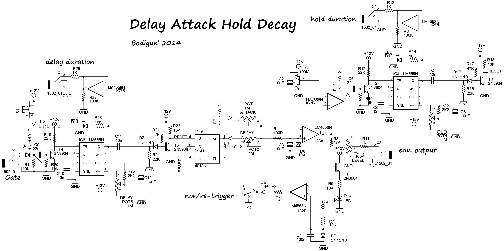
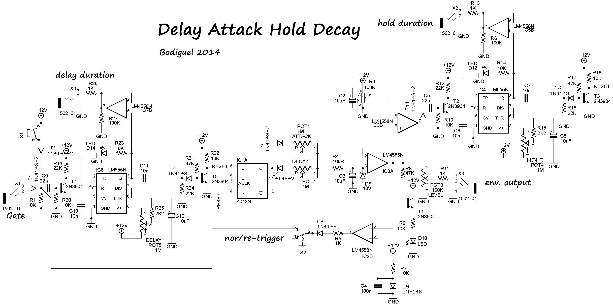

COMPLEXE ENVELOPE
This is an envellope rather odd. The hold segments is timed by a timer not a by an external event.
another version has been tested with an internally timed delay at the begining.
Both circuits have a loop switch that make the enveloppe retriggers itself creating a kind of LFO.
 
the working is rather simple. Upon receiving a gate at the SET pin of the IC1A (CD4013), Q
output goes high, charging the C3 via D5/POT1/R4. Once the voltage at C3 is above the voltage
set by R3, IC3 goes high and triggers IC4 which delay is set by R15/R4/C8. Once the delay is finished
the Q output of IC4 goes low triggering the Reset pin of IC1A. Q output of IC1A goes low, C3 discharges through
R4/POT2/D4.
IC2B is used as a comparator that triggers if the enveloppe voltage goes lower than 0.7V (diode drop). If so,
it retriggers the Set pin of IC1A.
Changing C3 value for lower value reducing the charging/discharging time of the circuit, it can go well into audio
Overall the circuit is interesting, using different ICs. However, the amount of components can be reduced by
using...a microcontroller as always. Purists won't soil their pants as this don't really deals with audio (not that
I care)

the working is rather simple. Upon receiving a gate at the SET pin of the IC1A (CD4013), Q
output goes high, charging the C3 via D5/POT1/R4. Once the voltage at C3 is above the voltage
set by R3, IC3 goes high and triggers IC4 which delay is set by R15/R4/C8. Once the delay is finished
the Q output of IC4 goes low triggering the Reset pin of IC1A. Q output of IC1A goes low, C3 discharges through
R4/POT2/D4.
IC2B is used as a comparator that triggers if the enveloppe voltage goes lower than 0.7V (diode drop). If so,
it retriggers the Set pin of IC1A.
Changing C3 value for lower value reducing the charging/discharging time of the circuit, it can go well into audio
Overall the circuit is interesting, using different ICs. However, the amount of components can be reduced by
using...a microcontroller as always. Purists won't soil their pants as this don't really deals with audio (not that
I care)
{kind=link}
{kind=link}